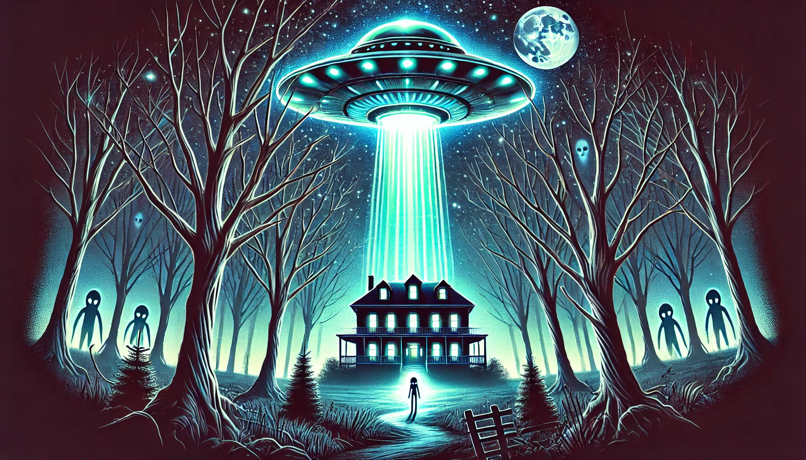

Lesson-15: English Language
Grammar
Complex Subject
What is Complex Subject?
The Complex Subject is a grammatical construction in English where the subject of the sentence is combined with an infinitive or participle. This construction is often used with passive verbs or certain expressions to show what people believe, say, think, or perceive about the subject.
Structure
The general structure of a Complex Subject is:
- Subject + Passive Verb + Infinitive
- It + Passive Verb + that-clause (optional alternative)
Examples:
- He is believed to be a good leader.
- The project is expected to be completed by next month.
- It is said that she knows five languages.
Common Passive Verbs Used
Here are some common passive verbs used in Complex Subject constructions:
- is/are said
- is/are believed
- is/are thought
- is/are known
- is/are expected
- is/are reported
Examples in Sentences
- The Earth is known to orbit the Sun.
- She is said to have won the competition.
- They are believed to be working on a secret project.
Reading
Mysteries of the World: UFOs and Paranormal Phenomena
The world is full of mysteries that continue to fascinate and puzzle humanity. Among the most intriguing are stories of UFOs (Unidentified Flying Objects) and paranormal phenomena. These tales ignite our imagination and challenge our understanding of reality.
The Mystery of UFOs
For decades, people have reported seeing strange objects in the sky. These sightings range from glowing orbs to disc-shaped crafts moving at incredible speeds. The term "UFO" was popularized in the mid-20th century when military pilots and civilians began reporting unexplained aerial phenomena.
One of the most famous incidents occurred in 1947 in Roswell, New Mexico. A farmer discovered strange debris on his land, leading to rumors of a crashed alien spacecraft. While the U.S. government claimed it was a weather balloon, many believe it was evidence of extraterrestrial life. Even today, UFO enthusiasts study declassified government documents and video footage, hoping to uncover the truth.
Paranormal Phenomena
Beyond UFOs, the world is also filled with tales of ghosts, haunted places, and unexplained events. Paranormal phenomena often involve strange occurrences that defy scientific explanation. For example:
- Ghosts: Many cultures share stories of spirits lingering in the mortal world. From shadowy figures in old castles to voices heard in empty rooms, ghost stories are as old as humanity itself.
- Poltergeists: These mischievous spirits are said to move objects, make noises, or even cause physical disturbances.
- The Bermuda Triangle: This area in the Atlantic Ocean is infamous for mysterious disappearances of ships and planes. Some attribute these events to supernatural forces, while others believe in natural explanations like magnetic anomalies.
Why Do These Mysteries Fascinate Us?
UFOs and paranormal phenomena capture our attention because they challenge what we know. Are we alone in the universe? Can science explain everything, or are there forces beyond our understanding? These questions spark debates, inspire movies, and even lead to scientific investigations.
While skeptics demand evidence, believers argue that not everything can be explained. Whether these mysteries are rooted in fact or fiction, they remind us that the world is full of wonder and endless possibilities.
So, what do you think? Are UFOs visitors from another galaxy? Are ghosts real? Or are these stories simply a reflection of our imagination? The answers remain elusive, but the mysteries continue to captivate us.
Exercise 1: Fill in the Blanks
Complete the sentences using the correct words:
1. The Roswell incident occurred in ______.
2. UFO stands for ______ Flying Object.
3. The Bermuda Triangle is located in the ______ Ocean.
Exercise 2: Multiple Choice
Choose the correct answer:
1. What is a common explanation for UFO sightings?
Weather balloonsAlien spacecraft
Both of the above
2. Poltergeists are known to:
Haunt old castlesMove objects and make noises
Disappear ships
Exercise 3: True or False
Decide if the statements are true or false:
1. The Roswell incident involved a UFO crash.
TrueFalse
2. The Bermuda Triangle is located in the Pacific Ocean.
TrueFalse
Writing
Exercise 1: Imagine and Describe
Imagine you are a witness to a UFO sighting. Describe the event in detail. Include answers to the following questions: - What did you see? - How did you feel? - How did others react?
Exercise 2: Write an Argument
Do you believe in the existence of UFOs or paranormal phenomena? Write a short essay (150-200 words) explaining your opinion. Provide reasons and examples to support your argument.
Exercise 3: Create a Mystery
Write a short story (200-250 words) about a mysterious event involving UFOs or paranormal phenomena. Use vivid descriptions and suspense to make your story engaging.
Speaking
Exercise 1: Share Your Opinion
Do you believe in UFOs or paranormal phenomena? Record a 1-2 minute speech explaining your opinion. Include: - Why you believe or don’t believe in them. - Any stories or evidence you know about.
Recording status: Not started
Exercise 2: Describe a Picture
Look at the image of a UFO (or imagine one if no image is available). Describe it in detail. Include: - What it looks like. - Where it might be. - What it could be doing.
Recording status: Not started
Exercise 3: Tell a Story
Imagine you are a news reporter covering a UFO sighting or a paranormal event. Create a 2-3 minute report. Include: - What happened. - Who was involved. - What might happen next.
Recording status: Not started
Listening
Exercise-1
Listen to the audio and answer the question below.
Question 1: Did the witness describe the UFO as being triangular in shape?
YesNo
Exercise-2
Listen to the audio and answer the question below.
Question 2: Was the ghost described as friendly?
YesNo
Exercise-3
Listen to the audio and answer the question below.
Question 3: Did the person recall being taken aboard a spacecraft?
YesNo